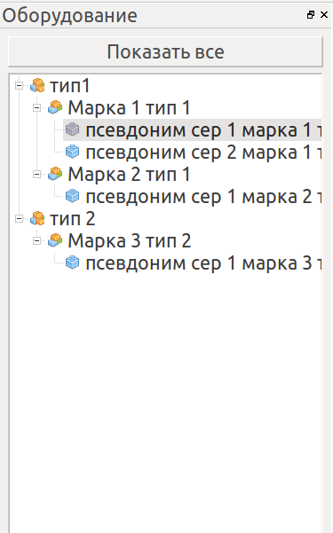

Оборудование в программе представленно в панели, размещенной по умолчанию слева в виде дерева.

Единицы оборудования классифицированны по типам и маркам оборудования, отображенны в виде дерева.
При выборе узла дерева (типа, марки или единицы оборудования) подробная информация по нему отображается в панели информации. Также, при выборе узла дерева происходит фильтрация в таблице событий - отображаются только те события, которые относятся к выбранному узлу. Кнопка "Показать все" служит для обнуления фильтра.
Размер и положение дерева оборудования могут быть произвольно изменены пользователем, изменения сохраняются при выходе из программы. Дерево оборудования может быть закрыто нажатием на крестик в его заголовке, и восстановленно из меню